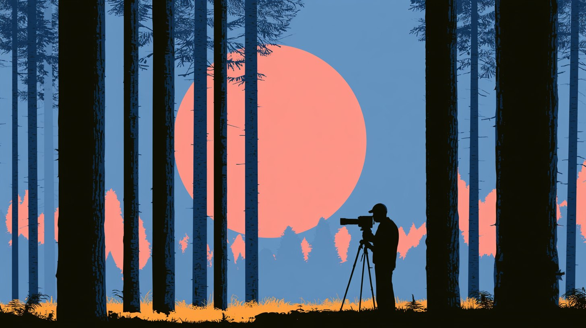

A Forbes English Roleplay Quest
The Documentary Filmmaker's Story
Ten years. One camera. A career built one storm, one pitch, and one grammar checkpoint at a time. Make the calls that shape your story, then prove you can use the English that comes with each one.
Every choice and every answer changes where the story ends.